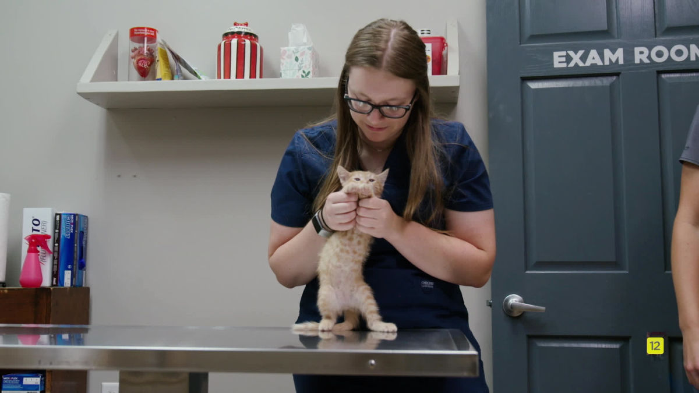

Denuncias por maltrato
EN ROSARIO, ARGENTINA
Si Ud. conoce y/o de alguna manera se entera de un caso de maltrato hacia un animal, delito que es castigado por la ley penal Nro. 14.346 (Ley Sarmiento) debe dirigirse a realizar la correspondiente Denuncia Penal a cualquiera de los siguientes lugares indistintamente:
Fiscalía Regional 2 Rosario.
Sarmiento 2850
3414721700
Centros Territoriales de Denuncias (CTD: Son unidades de organización de la administración pública provincial que gestionan un sistema de atención, orientación y recepción de denuncias relativas a hechos delictivos o contravenciones en el marco de faltas provinciales)
- CTD Sudoeste: Av. Francia 4435. Tel: 5258440 / 4772581
- CTD Centro: Mendoza 3538. Tel: 4724568/4724569
- CTD Noroeste: Provincias Unidas 150 bis. Tel: 4727555/6
- CTD Norte: Rondeau Gra. José Nro. 767. Tel: 4890815
- CTD Sur: Uriburu Nro. 637. Tel: 4809890 Int. 443
Comisaría del lugar perteneciente a la URII.

